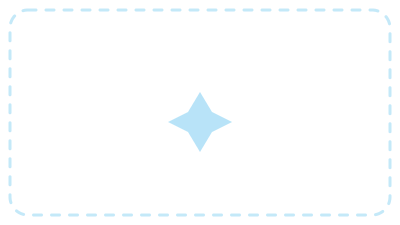

TEAM PROJECT • ACCESSIBILITY & INCLUSIVE DESIGN • MARCH 2025
Elevator Accessibility
A concept for making elevators easier and safer for visually impaired users to navigate independently, combining audio guidance, haptic feedback, and personalized RFID access.

- Role
- Accessibility & Interaction Designer
- Team
- Team project
- Timeline
- March 2025
- Methods
- Research synthesis, concept prototyping
Overview
Problem
Navigating elevators poses real challenges for visually impaired users: buttons that are hard to locate, minimal audio feedback, braille panels that become inaccessible in crowded elevators, and accessibility standards that are inconsistent from building to building.
Goal
Make navigation safer and more intuitive through RFID keycard integration, auditory feedback, and tactile button enhancements — reducing confusion and promoting independence in public and corporate buildings.
Impact
This was a course concept, not a shipped product, so there's no real usage data yet. [TBD: add outcomes if this gets built or tested.]
Research
Our research looked at existing technologies that assist visually impaired users through sensory feedback. One study proposing a haptic wristband to guide users influenced our decision to build similar guidance into a headphone-based concept instead — other haptic navigation devices we looked at were functional but too bulky for everyday use, which pushed us toward a lighter, more wearable solution. An article on multi-sensory navigation aids further shaped our decision to combine audio cues with haptic feedback.
Key problems identified
- Difficulty locating elevator buttons and identifying the correct floor
- Minimal audio or haptic feedback, leading to confusion mid-ride
- Crowded conditions that make braille panels hard to reach or read
- Inconsistent accessibility standards from one elevator to the next
[TBD — add a real quote from a research interview or accessibility consultant once we have one on record.]
Research participant
Process
No single fix covered every situation — a crowded car, an unfamiliar building, a rider who'd rather skip extra hardware.
So we split the concept into two layers: a wearable for real-time guidance, and baseline interface changes that help everyone, device or not.
Tourist Headphones
- Bluetooth-enabled headphones that deliver audio guidance at specific trigger zones
- Open-back, adjustable design for comfort and awareness of surrounding sound
- Hot-swappable parts for quick maintenance and hygiene
- Haptic vibration alerts when nearing other headphone users, to help prevent collisions

Quality-of-life elevator changes
- Replacing circular call buttons with directional arrow buttons for easier orientation
- Pairing classic braille buttons with a digital RFID pad for personalized interaction
- Adding auditory floor cues for real-time feedback and better spatial awareness
Design Iterations
Concept sketches and flow iterations from this project — swap the placeholders below for the real artifacts as they're scanned/exported.
Final Solution
Our concept enhanced elevator accessibility with three core features:
Audio & haptic guidance
Headphones that guide users and announce floors through sound and vibration.
Redesigned tactile interface
Directional arrow buttons and auditory floor cues for easier, independent navigation.
Personalized RFID access
Keycards that automatically load a user's accessibility settings on entry.
Results
This was a course concept rather than a shipped product, so there's no real usage data to report yet — these are the metrics we'd want to track if it were built and tested.
Reflection
Our goal was to create an inclusive, intuitive system that empowers visually impaired users to navigate elevators independently and confidently. By combining haptic feedback, audio guidance, and RFID personalization, our solution bridges the gap between accessibility and modern design — proof that innovation and inclusivity can coexist in everyday environments.